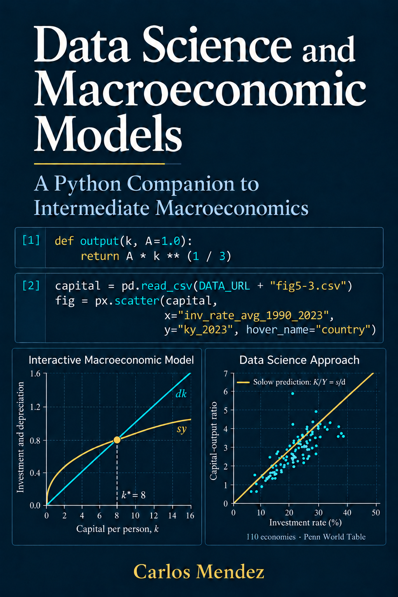

flowchart LR A["Data"] --> B["Explore"] --> C["Stylized facts"] --> D["Model"] --> E["Compare with data"] --> F["Revise"] F -- "a sharper question" --> A F -- "a better idea" --> D %% Colors live in the theme files (_includes/theme-*.scss), so the diagram follows the light/dark toggle classDef data stroke-width:1.5px; classDef model stroke-width:1.5px; class A,B,C data; class D,E,F model;
Data Science and Macroeconomic Models
A Python Companion to Intermediate Macroeconomics
Preface

Why this book
Macroeconomics begins with facts. How fast have living standards risen? Why are some countries so much richer than others? How do output, unemployment and inflation move when the economy turns down? We need answers from the data before we can build a model. Models are our best attempt to explain the facts, and the facts tell us which models deserve our attention.
This book follows that idea in two steps:
- Find the facts with data science. You download, plot and explore real macroeconomic data, and you decide for yourself what pattern the data show.
- Explain the facts with macroeconomic models. You move sliders, change parameters and edit the Python code of each model, and you check how well it accounts for the facts you found.
Each chapter is an interactive notebook. You can read it on this website or run it in Google Colab, with nothing to install.
Stylized facts: where models begin
A stylized fact is a broad pattern in the data that holds across many countries or over long periods. It is “stylized” because it leaves out details and exceptions. Not every year or every country fits it exactly, but the pattern is strong enough that a good theory should explain it.
The term comes from the economist Nicholas Kaldor. In Kaldor (1961), he argued that theory should start from a summary of the facts, not from convenient assumptions. He then listed six stylized facts of economic growth:
- Output per worker grows at a roughly constant rate over long periods.
- Capital per worker also grows over time.
- The rate of return on capital is roughly constant.
- The ratio of capital to output is roughly constant.
- The shares of labor and capital in national income are roughly constant.
- The growth rate of output per worker differs widely across countries.
These six facts set the agenda for growth theory. With technological progress, the Solow model (Chapters 5 and 6) reproduces the first five. The sixth raised a new question, why countries differ so much, which Chapters 3 to 6 take up.
Stylized facts are not carved in stone. They summarize the data, so new data can revise them. Take labor’s share of income, long described as “about two-thirds.” Jones (2024, Chapter 2) notes that it has drifted down since around 1970. In the Chapter 2 notebook, you check this yourself with the latest U.S. national accounts. Labor earned 0.65 of income on average from 1950 to 2025, close to two-thirds, but its share has been below 0.60 since 2022. Is the old fact still a fact? The data alone do not settle it, but they tell you exactly which question to ask.
From data to facts: the data-science step
Jones (2024) gives data a central role. Its chapters are full of figures of real economies, and its models are judged by how well they explain what those figures show. This book takes one more step. Instead of reading the facts from a printed figure, you derive them yourself.
Every data figure in this book is interactive. Each one is built from public data, usually updated to the latest available year. You can:
- Explore the figures. Hover over any point to read its value, zoom into a period, or press play to watch countries move over time.
- Change the question. Switch countries, years and variables with simple widgets or a one-line change in the code. Does the fact you see for the United States also hold for Japan, Brazil or Nigeria? Does it survive if the sample starts in 1990 instead of 1960?
- Get fresh data. Appendix B shows how to download data directly from FRED, the World Bank, the IMF, the ECB, Eurostat, the OECD, the Penn World Table, the Maddison Project and Our World in Data. Your facts can be as current as the data.
- Go further with AI. Colab includes Gemini, an AI assistant that can explain a line of code, fix an error or write a new plot from a plain-language request. Other assistants, such as Claude or ChatGPT, work just as well. Use them freely, but always check what they produce. An AI assistant can write code that runs and still answers the wrong question.
The aim is not to replace the facts in Jones (2024). It is to make you comfortable asking the data a question and judging the answer, which is what macroeconomists do every day.
From facts to models: the modeling step
Once you have a fact, you want to know why it holds. That is the job of a model. The models in this book follow those in Jones (2024):
- The long run: the production model, the Solow model and the Romer model of ideas.
- The short run: the IS curve, monetary policy, the Phillips curve and the AS/AD framework.
- Applications: consumption, investment, government budgets, trade and exchange rates.
- The frontier: the dynamic stochastic general equilibrium (DSGE) models of Chapter 15, which central banks use for policy analysis and forecasting. Appendix D shows how to write them, solve them with rational expectations and estimate them, with Snowdrop, a free Python package developed at the IMF.
Here, however, you can operate every model:
- On this website, each model figure of the chapters has a slider. Move it to see how the outcome changes with a parameter.
- In Colab, each model figure has live sliders and buttons that solve the model again as you move them.
- In the code, each model is a few lines of plain Python, right next to its figure. Change a parameter, add a shock or replace an equation, and see what happens. This is where you can go beyond the textbook.
Then you close the loop by putting the model next to the data. Which facts does the model explain? Which does it miss? A model that misses an important fact is not a failure; it is the reason for the next chapter. For example, the Solow model explains much of why some countries are rich and others poor. On its own, however, it cannot explain why growth continues decade after decade. The economics of ideas in Chapter 6 fills that gap.
The chapters compare models with data by eye. Appendix D takes the last step that research takes: it estimates a model. The data choose the parameter values that make them most likely, by maximum likelihood or by Bayesian methods, and the estimation shows which parameters the data can pin down and which they cannot. There you estimate Ireland’s (2004) New Keynesian model on U.S. data from 1948 to 2002 and reproduce its published estimates.
The cycle of the book
Every chapter runs through this cycle at least once. The blue steps are data science; the green steps are macroeconomic modeling. You start with the data and explore them until a pattern stands out. The pattern becomes a stylized fact. A model proposes an explanation, and you compare its predictions with the data. The comparison sends you back either to the data with a sharper question, or to the model with a better idea. In Appendix D the comparison becomes formal: the data estimate the model’s parameters, and the likelihood measures the fit.
A companion to Jones (2024), not a substitute
This book is an interactive data-science companion to Jones (2024). Its 21 chapters have the same titles and follow the same order, so you can work through the two books side by side. I recommend reading a chapter of Jones (2024) first, for the economic reasoning and the full discussion. Then open the matching notebook to work with the data and the models. The notebooks do not repeat the textbook’s explanations, and they do not replace it.
This book is independent. It is not affiliated with or endorsed by the author or the publisher of the textbook. Every figure is an original adaptation, drawn with this book’s own code:
- Data figures are inspired by figures in Jones (2024). They are rebuilt from public data, usually updated to the latest year and extended to other countries.
- Model figures are adapted from its diagrams, with their own parameter values, layout and interactive controls.
A Sources note below every figure names the figure in Jones (2024) that inspired it and links to the data sources, so you can open them and explore the data yourself.
Who this book is for
- Undergraduate students in intermediate macroeconomics, who want to see the ideas of the course at work in real data and learn practical Python along the way.
- Master’s students in business, public policy and development programs, who need a hands-on, data-driven understanding of the macroeconomy for analysis and policy work.
- Self-learners, who want a hands-on path through macroeconomics at their own pace, with no software to install.
- Data-science learners, who know some Python and want meaningful economic questions to apply it to.
- Macroeconomists, who know the theory and want to learn Python for data science with models they already know, and who want a free Python alternative to Dynare and IRIS for solving and estimating DSGE models (Appendix D).
No programming experience is assumed. Appendix A is a guided tour of Colab, Python and the data-science libraries used in the book. Appendix C reviews the math, with Python code for each calculation.
How the book is organized
Like Jones (2024), this book is built around one famous graph: U.S. GDP per person since 1870. The graph shows a long-run upward trend and short-run fluctuations around it, and it raises the question of what the future holds. The chapters follow these three themes:
- Preliminaries (Chapters 1–2): what macroeconomics studies and how we measure the macroeconomy.
- The long run (Chapters 3–8): economic growth, production, the Solow model, ideas, the labor market and inflation.
- The short run (Chapters 9–15): economic fluctuations, the Great Recession and the Covid-19 pandemic, the IS curve, monetary policy and the Phillips curve, the AS/AD framework, financial crises and DSGE models.
- Applications and microfoundations (Chapters 16–20): consumption, investment, the government, international trade and exchange rates.
- Conclusion (Chapter 21): parting thoughts on what macroeconomics has learned and what remains open.
- Appendices A–D: Colab and Python, live access to macroeconomic data, a math review, and DSGE modeling with Python.
Every chapter has the same structure:
- A Model overview builds the chapter’s main model step by step, from assumptions to solution and predictions, and ends with the model in code.
- Thematic sections work through the chapter’s figures (Fig. 1, Fig. 2, …). Each figure comes with a goal, the code that draws it, and a “What to notice” summary.
- Your turn tasks, with hints, ask you to change the data or the model and interpret the result.
- Concluding remarks sum up what the data showed and what the models explained.
How to use this book
- On this website you can read every chapter, see all the figures, hover over the data points and move the precomputed sliders under each model figure.
- In Google Colab you can run the code yourself. Click the Open in Colab badge at the top of a chapter, then choose Runtime → Run all. Every model figure gets live sliders and buttons, and you can try every “Your turn” task in an empty code cell.
- No installation is needed. Colab already has
numpy,pandas,plotlyandipywidgets, and the data are read directly from this book’s GitHub repository. The two appendices that need extra packages install them in their first code cell: Appendix B its data libraries, and Appendix D the Snowdrop package (about 20 seconds). - New to Python or Colab? Start with Appendix A.
Chapters
Appendices
| Appendix | Notebook | Colab |
|---|---|---|
| A | Google Colab, Python Coding, and Data Science Libraries | |
| B | Accessing Macroeconomic Data with Python | |
| C | Math Review for Macroeconomics | |
| D | DSGE Modeling with Python |
References
Jones, C. I. (2024). Macroeconomics (6th ed.). W. W. Norton.
Kaldor, N. (1961). Capital accumulation and economic growth. In F. A. Lutz & D. C. Hague (Eds.), The theory of capital (pp. 177–222). Macmillan.
© 2026 Carlos Mendez. Licensed under CC BY-NC 4.0.
You may share and adapt this material for non-commercial purposes, with attribution. The license covers the text, code and charts written for this book. It does not cover Jones (2024), Macroeconomics, whose figures and equations these notebooks adapt with attribution, nor third-party data, which keep their producers’ terms (see each chapter’s Sources notes).